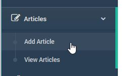

TrainEasy Quick Start
This Quick Start guide will help you get up and running with TrainEasy in no time! This quick start assumes that you have successfully installed
TrainEasy on you server. For instructions on how to do this, please click here
The primary color is the major color used by the FrontEnd's theme. It controls the of buttons, the menu hover state and some other elements.
By default, the Primary color used by train easy is green. You should set this color to correspond to the major color of your brand.
To do this, go back to the Site Settings Page and click on the 'Colors' tab. When you click on the color box of the 'Site Primary Color' field,
a color picker will appear

Select your color and then click ok. Save the changes to complete.
If you now go to your frontend and refresh the page, you will observe that the green color will have changed to whatever you set.
Now its time to setup your classes. Classes refer to the individual courses that take place during each session. It is advisable to first create your classes before
creating sessions as you will need to assign already created classes to a session when adding sessions.
Please note that you do not need to create new classes for each new session. You are encouraged to reuse classes. Hence, you should name classes in a generic manner.
For example, lets say I'm running a business school. I could have classes such as Accounting, Marketing,Customer Service etc. I would name these classes just like this and not
'Accounting May 2017' or any date related name.
To create your first class, click on the ‘Classes’ menu option. Next, click on the ‘Add
Class’submenu

On the ‘Add Class’ page, fill in the details of the class

Each class will have a page of its’s own on the frontend. Classes can also be featured
on the Homepage. So it is advisable to fill in good descriptive information about your
classes. The following fields are available
- Class name: a short description about the class.
- Description: the full explanation about the class in rich text format.
- Sort Order (optional): the position of the class relative to other classes. This controls which class appears first on the list (on the frontend) in ascending order i.e. class 1 will be at the top.
- Cover Image (optional): a descriptive image of the class.
Once you fill in all the details. Click Save Change to save. Add all your classes this way.
Now its time to add your first session. A session represents a training period. It is also a way to group classes.
Sessions are what students can enroll for and optionally pay for.
To create a new
session, click on the ‘Sessions’ menu option then click on ’Creat Session’

The session creation page will open as shown below:
 The following fields are available for each session
The following fields are available for each session
- Session Name: A short descriptive name of the session
- Session Start Date: The date the first class in the session is scheduled to begin.
- Registration Closes: The closing date for students to be able to enroll for the
session. The session can still be visible on the frontend after this date but the
‘Enroll’ button will be unavailable.
- Session End Date: The date the last class in the session is scheduled to hold.
The session will no longer be visible on the frontend after this date.
- Payment Required: This specifies if a session is free or requires payment.
- Session Fee: The fee charged for the session. This field only takes effect if the
‘Payment Required’ field is set to ‘Yes’.
- Session Description: A summary about the session and its classes.
- Student Enrollment: This enables you to open or close enrollment for the session
at any time.
- Venue: The location for the classes in the session. If classes will hold in multiple
locations, you can specify the venue for each individual class.
- Select Classes: Select all the classes for the session. You can also specify the
date and venue for the class if (different from the session venue).
Managing Sessions
Fill in the relevant fields and then click 'Save Changes' to finish. Your session will now be availabel on the Frontend ready for Student enrollment.
If you are charging a fee for your training, you will need to setup your payment methods next. TrainEasy comes with 5 different payment methods.
Each payment method will automatically use the currency
you configured for your site. So make sure the method supports your currency
before enabling it.
To configure a method, click on the ‘Payment Methods’
menu option

The list of available methods will be displayed:
Click on the ‘Edit’ button for a method to configure it.

Fill in the relevant credentials/details and save.
Note that you will need to get the credentials from the
respective gateway website.
TrainEasy makes it very easy to add different types of
content to your homepage. This is done via ‘Homepage Widgets’ . The following
types of widgets are available:
1. Slideshow
2. Text
& Button
3. Featured
Classes
4. Session
Calendar
5. Plain
Text
6. Blog
Posts.
Note that you can add multiple widgets of the same or
different type to your homepage.
To add a new widget, click on the ‘Homepage Widgets’
option

On the Homepage Widgets page, click on the ‘Add Widget’
button.

This will bring up a popup that will enable you specify
the type of widget you are ttrying to create.
Once you click on the ‘Create’ button. You will be able
to configure the available options depending on the widget type

The articles feature is a simple content management
system that enables you to easily manage information pages on your site e.g.
About us. Vision, Mission etc.
To create a new article, click on the ‘Add Article’ menu
option under ‘Articles’

The ‘Add Article’ page has the following options:
1. Heading:
This is the main page title.
2. Content:
This is the main content of the page.
3. Show
on top navigation: This controls if the link to the article will be displayed
on the top navigation bar on the frontend.
4. Show
on bottom navigation: This controls if the link to the article will be
displayed on the footer of the frontend.
5. Sort
order: The position of the article relative to other articles in ascending
order.
6. Parent:
Set this option if you would like the article to appear beneath another
article.
7. Url
slug: This determines the url path to the article e.g. http://yorudomain.com/about-us . This is automatically
generated but you can set it yourself if you wish.